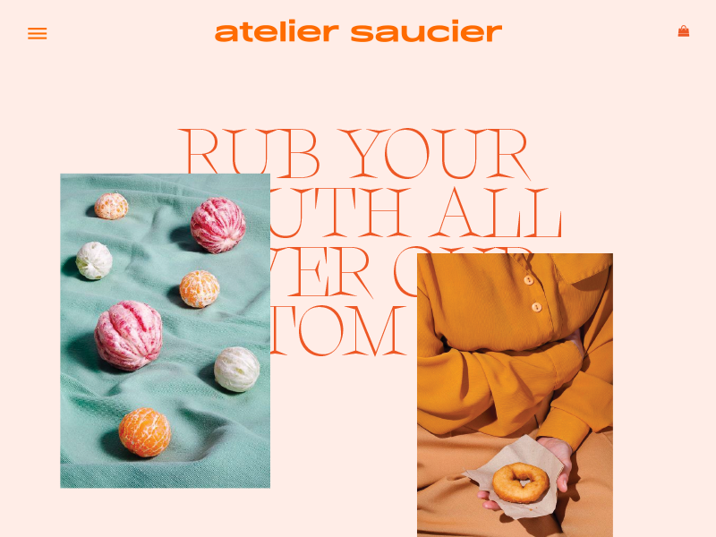

paragraph
SECTION article content goes here
Meet Stefano Peschiera, a digital designer and firm believer that color goes a long way in creating web design. Stefano even created a free Sketch plugin called He that offers a collection of hand-picked color palettes to help you create beautiful websites and apps. The Hue system is based on Stefano's own process for selecting effective website color schemes. Today, he's sharing what this process looks like.
Over the last few years, I've had a series of unfortunate events that created some big changes in my life. My wife came out, we divorced, and I was laid off.
Years before the divorce, I had signed up for an art school online, the School of Visual Storytelling. I had started classes but life caught up to me. I decided to go back to it to help jump-start my journey back to myself.
Going back to the basics helped get my brain reconnected to my hand, a connection I was not aware was severed. It felt good drawing shapes over and over. A task I hated in college. Shapes turned to objects, and objects became characters. One day I realized I was drawing the same two characters. One was a scruffy-looking muppet character, the oher was a blocky Cyclops.